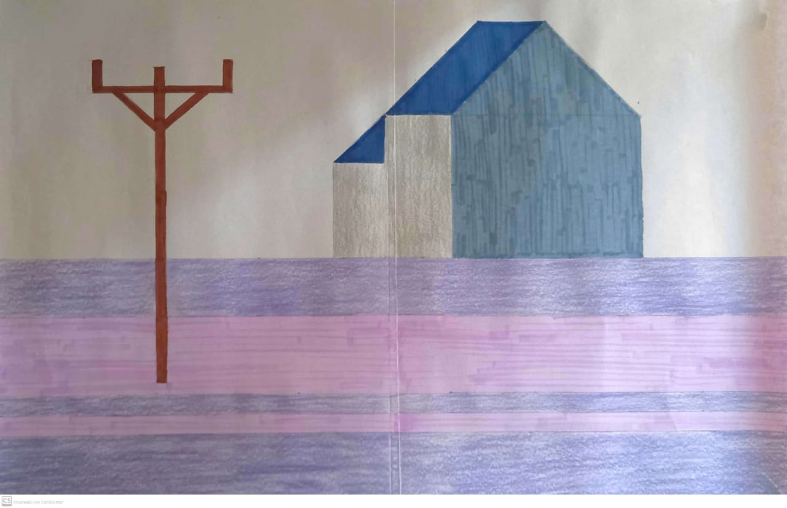

Referencias bibliograficas
En las artes, el maximalismo es el gusto estético del exceso, que nació en repuesta a la corriente artística opuesta, el minimalismo. Es una tendencia la cual busca implementar la filosofía contraria al minimalismo, en donde se hace uso de la frase “Más es más” para hacer uso de cualquier textura, color, forma, prenda o detalle para generar un caos organizado.
| El arte maximalista puede verse incluso en diseños de interiores y hace que el desorden y lo excesivo pueda verse como algo atractivo gracias a su gran cantidad de colores. |
En su ámbito más general, es la tendencia a reducir a lo esencial, a despojar de elementos sobrantes. También se utiliza para describir una tendencia en el diseño y la arquitectura, donde la estructura se reduce a sus elementos necesarios. El diseño minimalista ha sido muy influenciado por el diseño tradicional japonés y la arquitectura.
|  | El minimalismo puede parecer simple y sencillo, pero con la imaginacion, en este dibujo pueden notarse sensaciones; se ve tan melancolico, frio y solitario. |
El arte cinético describe una corriente artística caracterizada por obras que tienen o simulan movimiento. De esta manera, muchas de estas obras se piensan para interactuar con elementos que logren ese efecto de movimiento.
| Puede captarse que el dibujo tiene cierta profundidad debido a sus colores y sus formas. |
Arte pop es un movimiento artístico surgido en Reino Unido y Estados Unidos a mediados del siglo XX, inspirado en la estética de la vida cotidiana y los bienes de consumo de la época, tales como anuncios publicitarios, comic books, objetos culturales
| Distinguir que los colores tan brillantes y llamativos son muy atractivos para la vista y es por ello que en el pop art se utilizan colores como estos. |
El arte conceptual es un movimiento artístico en el que la conceptualización o la idea, es más importante que la obra de arte en tanto objeto físico o material.
| Creado con el proposito de comprender que en los ultimos años se vuelve mas alarmante el tema de la contaminacion y degradacion de la flora que habita en nuestro mundo. |